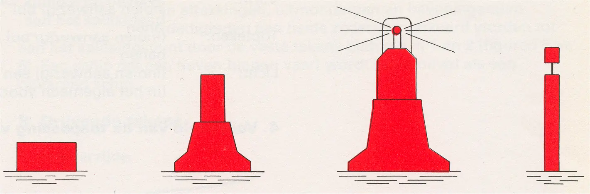
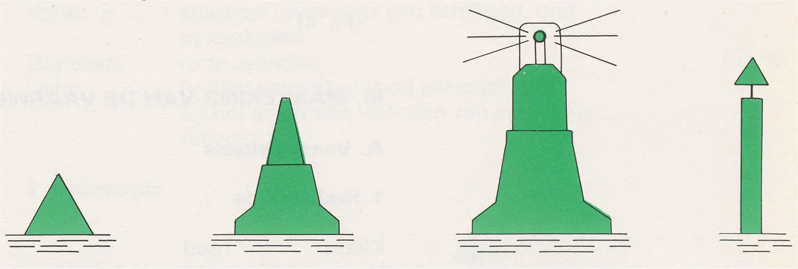
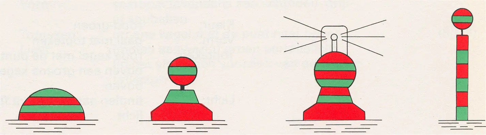
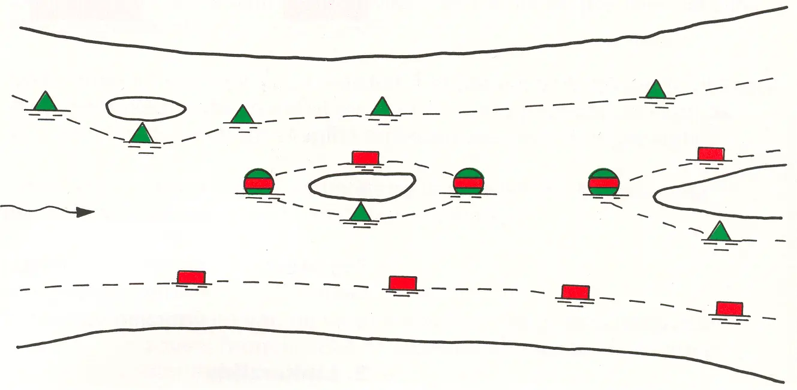

II Markering van de vaargeul
Rijnvaartpolitiereglement 1995
1 Rechterzijde

Kleur: | rood |
Vorm: | stompe boei of ton (eveneens een lcihtboei), drijf- of kopbaken |
Topteken: | (indien aanwezig) rode cylincer |
Licht: | (indien aanwezig) rood periodelicht (in het algemeen voorzien van een radarreflector) |
2 Linkerzijde

Kleur: | groen |
Vorm: | spitse boei of ton (eveneens een lcihtboei), drijf- of kopbaken |
Topteken: | (indien aanwezig) groene kegel met de punt naar boven |
Licht: | (indien aanwezig) groen periodelicht (in het algemeen voorzien van een radarreflector) |
3 Splitsing

Kleur: | rode en groene horizontale banen |
Vorm: | bolvormige boei of ton (eveneens een lcihtboei), drijf- of kopbaken |
Topteken: | (indien aanwezig) bol met rode en groene horizontale banen |
Licht: | (indien aanwezig) een flikker- of isofaselicht (in het algemeen voorzien van een radarreflector) |
4 Voorbeeld van de toepassing van de figuren 1 t/m 3
